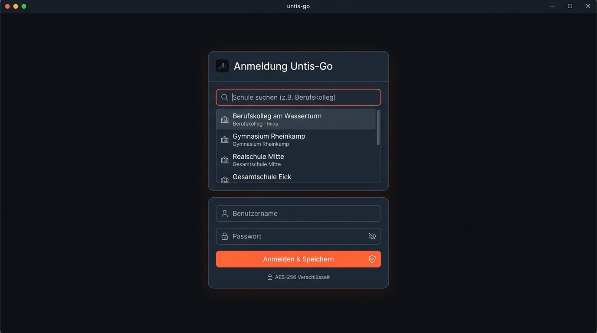
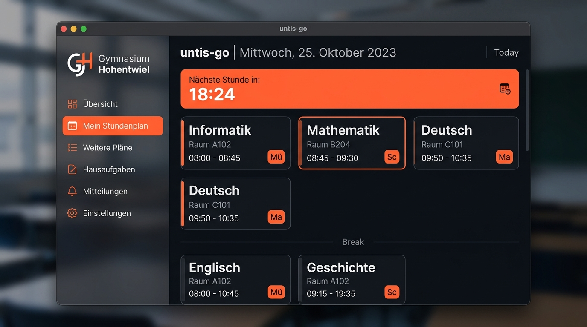
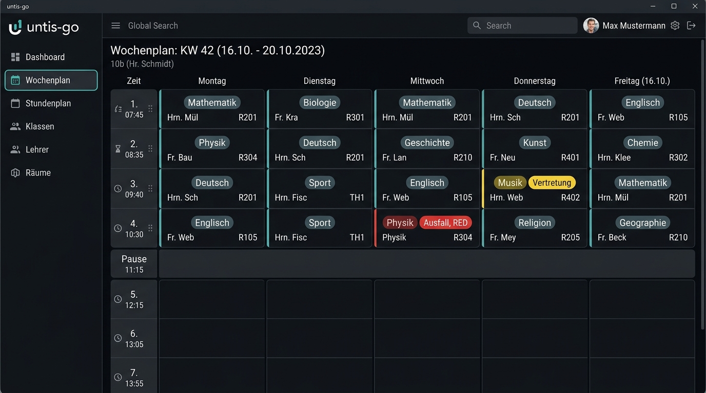

1 Was ist Untis GO?
Untis GO ist ein nativer, freier und quelloffener Desktop-Client für das Schulstundenplan-System WebUntis. Entwickelt in Go und WebKitGTK/HTML5, kombiniert die Anwendung extreme Ausführungsgeschwindigkeit mit einem aufgeräumten, augenschonenden Dark Theme.
Im Gegensatz zur offiziellen Web-Oberfläche, die oft langsam lädt und Sitzungs-Timeouts erzwingt, setzt Untis GO auf eine Local-First-Architektur: Einmal geladene Stundenpläne werden in einer lokalen SQLite-Datenbank verschlüsselt gespeichert und stehen beim nächsten Start in unter 1 Millisekunde bereit – selbst bei instabiler Internetverbindung oder Offline-Betrieb.
2 Installation & Erste Schritte
Untis GO steht für Linux und Windows als vorkompilierte Standalone-Binärdatei sowie als Go-Paket bereit.
Linux Vorkompiliertes Paket (Empfohlen)
Lade das Tarball von der Release-Seite herunter, entpacke es und verschiebe die Datei in deinen Systempfad:
tar -xzf untis-go-v1.6.0-linux.tar.gz chmod +x untis-go sudo cp untis-go /usr/local/bin/ untis-go
Windows Standalone ZIP
Lade untis-go-v1.6.0-windows.zip herunter, entpacke das Archiv in einen Ordner deiner Wahl und starte untis-go.exe. Es ist keine Installation von Treibern oder Runtimes erforderlich.
Installation via Go CLI
Falls du eine aktuelle Go-Entwicklungsumgebung besitzt (Go 1.21+):
go install github.com/benzjeremy/untis-go@latest
webkit2gtk-4.1 und gtk3. Auf Ubuntu/Debian installierst du libwebkit2gtk-4.1-dev und libgtk-3-dev.
3 Onboarding & Schulsuche
Beim allerersten Start begrüßt dich der interaktive Einrichtungsassistent. Es ist keine Schule vorkonfiguriert – du kannst jede beliebige WebUntis-Schule weltweit nutzen.

Schule suchen
Tippe den Namen deiner Schule, deiner Stadt oder deiner Schulnummer in das Suchfeld ein. Das System fragt in Echtzeit die offizielle WebUntis-Schuldatenbank ab und listet passende Ergebnisse mit Anschrift auf.
Schule auswählen
Klicke auf deine Schule. Die Server-Adresse (z.B. mese.webuntis.com) und der schulspezifische Login-Name werden automatisch im Hintergrund konfiguriert.
Zugangsdaten eingeben
Gib deinen Benutzernamen und dein persönliches Passwort ein. Wenn deine Schule anonymen Lesezugriff erlaubt, kannst du die Felder auch leer lassen.
Automatische Erkennung
Untis GO testet die Verbindung sofort per JSON-RPC. Nach erfolgreicher Anmeldung wird deine Klasse automatisch ermittelt und dein Stundenplan sofort geladen.
4 Das Dashboard & Live-Countdown
Das Dashboard ist die Steuerzentrale deines Schultags. Es fasst alle relevanten Informationen auf einen Blick zusammen, ohne dass du suchen musst.

Die wichtigsten Dashboard-Bereiche:
- Live-Countdown-Banner: Zeigt dir sekundengenau an, wann die nächste Unterrichtsstunde beginnt, wie lange die aktuelle Pause noch dauert oder wann Schulschluss ist.
- Unterricht heute: Farbcodierte Unterrichtskarten mit Fachname, Fachlehrer, Raum und Glockenzeiten.
- Schnellzugriff Hausaufgaben: Deine anstehenden Hausaufgaben sortiert nach Fälligkeitsdatum mit Sofort-Erledigt-Checkbox.
- Schuldurchsagen & Mitteilungen: Wichtige Durchsagen der Schulleitung oder von Lehrkräften direkt im Blickfeld.
5 Stundenplan: Tages- & Wochenraster
Seit Version v1.4 verfügt Untis GO über ein komplett überarbeitetes, synchrones 6-Spalten-Wochenraster. Jede Schulstunde (1. bis 12. Stunde) wird als einzelne Zeile dargestellt.

Eigene Fachnamen (Fach-Aliase)
Deine Schule vergibt kryptische Abkürzungen wie LF09, WIR oder M-GK1? Unter Einstellungen & Profile → Fach-Aliase kannst du für jede beliebige Abkürzung einen verständlichen Namen festlegen (z.B. LF09 → Anwendungsentwicklung). Dieser wird ab sofort überall in deinen Plänen angezeigt!
6 Weitere Stundenpläne & Favoriten (❤️)
Im Menüpunkt Weitere Stundenpläne kannst du beliebige Ressourcen deiner Schule abfragen:
- Klassenpläne: Sieh nach, wann andere Klassen Unterricht oder Ausfall haben.
- Lehrerpläne: Finde heraus, in welchem Raum eine Lehrkraft gerade unterrichtet oder wann ihre Sprechstunde ist.
- Raumpläne: Prüfe, ob Computerräume, Sporthallen oder Chemieräume zu einer bestimmten Zeit belegt oder frei sind.
7 Aufgaben, Abwesenheiten & Mitteilungen
Untis GO bietet eine vollständige lokale Verwaltung für deine schulischen Aufgaben und Abwesenheiten:
Hausaufgabenverwaltung
Erstelle eigene Aufgaben mit Fach, Beschreibung und Fälligkeitsdatum oder synchronisiere von Lehrern eingetragene WebUntis-Hausaufgaben. Mit einem Klick auf die Checkbox markierst du sie als erledigt.
Fehlzeiten & Krankmeldungen
Erfasse Abwesenheiten mit Von-Bis-Datum, Begründung und Status (entschuldigt / unentschuldigt). Untis GO berechnet automatisch deine Fehlstunden für das laufende Schuljahr.
Schulmitteilungen & Durchsagen
Lies Elternbriefe, Raumverlegungen und Durchsagen der Schulleitung in einem übersichtlichen Postfach mit Lesestatus und Detailansicht.
8 Multi-Profile & Schulwechsel
Besuchst du mehrere Bildungseinrichtungen, hast Geschwister an anderen Schulen oder betreust als Elternteil mehrere Schulkinder?
Untis GO unterstützt unbegrenzt viele Profile:
- Nahtloses Umschalten: Klicke im Menü auf Profile und wähle die gewünschte Schule aus. Untis GO schaltet die aktive Verbindung sofort ohne Neustart um.
- Schule löschen: Nicht mehr benötigte Profile lassen sich mit einem Klick auf das rote Mülleimer-Icon restlos aus dem sicheren lokalen Speicher entfernen.
9 Zero-Lag-Architektur & Sicherheit
Bei Untis GO hat Datenschutz höchste Priorität. Hier sind die technischen Schutzmaßnahmen im Überblick:
| Sicherheitsmerkmal | Implementierung | Schutzwirkung |
|---|---|---|
| AES-256-GCM Verschlüsselung | Passwörter werden mit hardwarebeschleunigtem AES-GCM (Authenticated Encryption) gespeichert. | Selbst bei Diebstahl der Festplattendatei können Zugangsdaten nicht im Klartext gelesen werden. |
| PBKDF2 Key Stretching | 100.000 Runden PBKDF2 mit SHA256 und hardwarespezifischem Salt. | Verhindert Brute-Force- und Rainbow-Table-Angriffe auf den lokalen Key Vault. |
| Dynamischer Zufallsport | Der interne Go-Server bindet an einen zufälligen Port auf 127.0.0.1. |
Andere lokale Programme können den Dienst nicht auf Standardports abfangen. |
| 32-Zeichen Crypto-Token | Alle internen API-Aufrufe verlangen einen kryptografischen Sitzungsschlüssel. | Verhindert unbefugte CSRF- und XSS-Zugriffe aus anderen Browser-Tabs. |
| SQLite Cache-First | Lokale SQLite-Datenbank mit WAL-Modus und Indizierung. | Ladezeiten unter 1 ms, kein Warten auf langsame Schulserver. |
10 Microsoft 365 & OneDrive Cloud-Synchronisierung (Pflicht ab v1.6)
Ab Version v1.6.0 verfügt Untis GO über eine native, obligatorische Anbindung an Microsoft 365. Damit werden deine Stundenplan-Profile, Notizen, benutzerdefinierte Fach-Abkürzungen und Einstellungen sicher in deinem persönlichen Microsoft OneDrive gesichert und geräteübergreifend synchronisiert.
🏫 Schul- & Schüleraccounts (Entra ID / Office 365)
Melde dich direkt mit deiner offiziellen Schul-E-Mail-Adresse an. Funktioniert nahtlos mit allen Microsoft 365 Education Mandanten.
👤 Private Microsoft-Konten (MSA)
Besitzt deine Schule kein Microsoft 365? Du kannst dich genauso unkompliziert mit deinem persönlichen Konto (@outlook.com, @hotmail.com) anmelden.
☁️ Automatisches OneDrive Backup
Deine Daten werden als verschlüsseltes JSON unter /Apps/OneDrive Client for Linux/untis_config.json in deinem OneDrive abgelegt. Keine Drittserver.
📱 Schneller Device-Code Login
Auf Geräten ohne lokalen Browser-Callback einfach microsoft.com/devicelogin aufrufen, Code eingeben und Untis GO synchronisiert sofort.
Über den Microsoft-Chip oben rechts in der Titelleiste kannst du jederzeit den aktuellen Verbindungsstatus einsehen, manuelle Synchronisierungen anstoßen oder dein Konto wechseln.
11 Tastaturkürzel (Power-User Shortcuts)
Mit diesen Tastenkombinationen navigierst du blitzschnell durch die App:
| Taste | Funktion | Beschreibung |
|---|---|---|
| ← | Vorheriger Tag / Woche | Blättert einen Tag (oder eine Schulwoche) zurück. |
| → | Nächster Tag / Woche | Blättert einen Tag (oder eine Schulwoche) vorwärts. |
| T | Heute (Today) | Springt sofort zum heutigen Tag zurück. |
| D | Tagesansicht (Day) | Wechselt in die detaillierte Tagesansicht. |
| W | Wochenansicht (Week) | Wechselt in das synchrone 6-Spalten-Wochenraster. |
| Esc | Schließen | Schließt alle offenen Dialogfenster, Modale und Menüs. |
12 Software-Updates & Releasemanagement
Untis GO besitzt einen integrierten Release-Manager:
Unter Über & Info kannst du mit einem Klick auf „Nach Updates suchen“ prüfen, ob eine neuere Version auf GitHub bereitsteht. Ist ein Update vorhanden, lädt Untis GO das offizielle, signierte Binärpaket atomar herunter und tauscht die Programmdatei im laufenden Betrieb sicher aus – kein mühsames manuelles Entpacken mehr nötig!
13 Häufig gestellte Fragen (FAQ)
Ist Untis GO offiziell von der Firma Untis GmbH?
Nein. Untis GO ist ein unabhängiges Open-Source-Projekt unter der GNU GPL-3.0 Lizenz. Es nutzt die standardmäßige WebUntis JSON-RPC API, um Schülern, Eltern und Lehrkräften ein besseres Desktop-Erlebnis zu bieten.
Werden meine Passwörter auf fremden Servern gespeichert?
Nein, niemals. Deine Zugangsdaten verlassen deinen Rechner nur verschlüsselt zur direkten Authentifizierung bei dem Server deiner eigenen Schule. Es gibt keine Zwischenserver, kein Tracking und keine Telemetrie.
Was kann ich tun, wenn der Login fehlschlägt?
Prüfe, ob du die richtige Schule ausgewählt hast und ob deine Zugangsdaten im normalen WebUntis-Browserportal funktionieren. Achte auf Groß- und Kleinschreibung beim Benutzernamen.
Wie kann ich einen Fehler melden oder ein Feature vorschlagen?
Erstelle einfach ein Ticket auf der GitHub Issues Seite. Feedback aus der Community ist ausdrücklich willkommen!